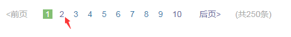
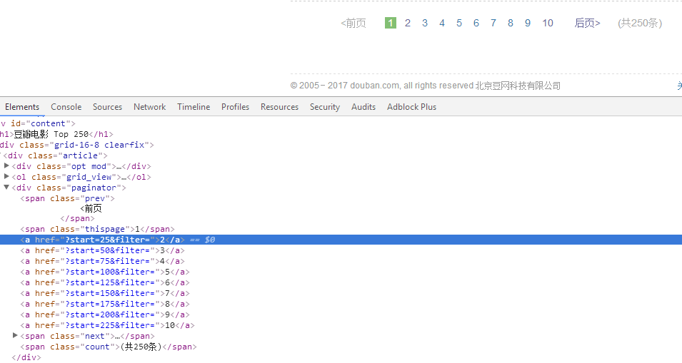

上篇文章介绍 Scrapy 框架爬取网站的基本用法。但是爬虫程序比较粗糙，很多细节还需打磨。本文主要是讲解 Scrapy 一些小技巧，能让爬虫程序更加完善。
设置 User-agent Scrapy 官方建议使用 User-Agent 池, 轮流选择其中一个常用浏览器的 User-Agent来作为 User-Agent。scrapy 发起的 http 请求中 headers 部分中 User-Agent 字段的默认值是Scrapy/VERSION (+http://scrapy.org)，我们需要修改该字段伪装成浏览器访问网站。
1) 同样在 setting.py 中新建存储 User-Agent 列表,
1 2 3 4 5 6 7 8 9 10 11 12 13 14 15 16 17 18 19 20 21 22 23 24 25 26 27 28 29 30 31 32 33 34 35 UserAgent_List = [ "Mozilla/5.0 (Windows NT 6.1) AppleWebKit/537.36 (KHTML, like Gecko) Chrome/41.0.2228.0 Safari/537.36" , "Mozilla/5.0 (Macintosh; Intel Mac OS X 10_10_1) AppleWebKit/537.36 (KHTML, like Gecko) Chrome/41.0.2227.1 Safari/537.36" , "Mozilla/5.0 (X11; Linux x86_64) AppleWebKit/537.36 (KHTML, like Gecko) Chrome/41.0.2227.0 Safari/537.36" , "Mozilla/5.0 (Windows NT 6.1; WOW64) AppleWebKit/537.36 (KHTML, like Gecko) Chrome/41.0.2227.0 Safari/537.36" , "Mozilla/5.0 (Windows NT 6.3; WOW64) AppleWebKit/537.36 (KHTML, like Gecko) Chrome/41.0.2226.0 Safari/537.36" , "Mozilla/5.0 (Windows NT 6.4; WOW64) AppleWebKit/537.36 (KHTML, like Gecko) Chrome/41.0.2225.0 Safari/537.36" , "Mozilla/5.0 (Windows NT 6.3; WOW64) AppleWebKit/537.36 (KHTML, like Gecko) Chrome/41.0.2225.0 Safari/537.36" , "Mozilla/5.0 (Windows NT 5.1) AppleWebKit/537.36 (KHTML, like Gecko) Chrome/41.0.2224.3 Safari/537.36" , "Mozilla/5.0 (Windows NT 10.0) AppleWebKit/537.36 (KHTML, like Gecko) Chrome/40.0.2214.93 Safari/537.36" , "Mozilla/5.0 (Windows NT 10.0) AppleWebKit/537.36 (KHTML, like Gecko) Chrome/40.0.2214.93 Safari/537.36" , "Mozilla/5.0 (Windows NT 6.3; Win64; x64) AppleWebKit/537.36 (KHTML, like Gecko) Chrome/37.0.2049.0 Safari/537.36" , "Mozilla/5.0 (Windows NT 4.0; WOW64) AppleWebKit/537.36 (KHTML, like Gecko) Chrome/37.0.2049.0 Safari/537.36" , "Mozilla/5.0 (Windows NT 6.1; WOW64) AppleWebKit/537.36 (KHTML, like Gecko) Chrome/36.0.1985.67 Safari/537.36" , "Mozilla/5.0 (Windows NT 5.1) AppleWebKit/537.36 (KHTML, like Gecko) Chrome/36.0.1985.67 Safari/537.36" , "Mozilla/5.0 (X11; OpenBSD i386) AppleWebKit/537.36 (KHTML, like Gecko) Chrome/36.0.1985.125 Safari/537.36" , "Mozilla/5.0 (Macintosh; Intel Mac OS X 10_9_2) AppleWebKit/537.36 (KHTML, like Gecko) Chrome/36.0.1944.0 Safari/537.36" , "Mozilla/5.0 (Windows NT 5.1) AppleWebKit/537.36 (KHTML, like Gecko) Chrome/35.0.3319.102 Safari/537.36" , "Mozilla/5.0 (Windows NT 5.1) AppleWebKit/537.36 (KHTML, like Gecko) Chrome/35.0.2309.372 Safari/537.36" , "Mozilla/5.0 (Windows NT 5.1) AppleWebKit/537.36 (KHTML, like Gecko) Chrome/35.0.2117.157 Safari/537.36" , "Mozilla/5.0 (Macintosh; Intel Mac OS X 10_9_3) AppleWebKit/537.36 (KHTML, like Gecko) Chrome/35.0.1916.47 Safari/537.36" , "Mozilla/5.0 (Windows NT 5.1) AppleWebKit/537.36 (KHTML, like Gecko) Chrome/34.0.1866.237 Safari/537.36" , "Mozilla/5.0 (X11; Linux x86_64) AppleWebKit/537.36 (KHTML, like Gecko) Chrome/34.0.1847.137 Safari/4E423F" , "Mozilla/5.0 (Windows NT 6.1; WOW64; rv:40.0) Gecko/20100101 Firefox/40.1" , "Mozilla/5.0 (Windows NT 6.3; rv:36.0) Gecko/20100101 Firefox/36.0" , "Mozilla/5.0 (Macintosh; Intel Mac OS X 10_10; rv:33.0) Gecko/20100101 Firefox/33.0" , "Mozilla/5.0 (X11; Linux i586; rv:31.0) Gecko/20100101 Firefox/31.0" , "Mozilla/5.0 (Windows NT 6.1; WOW64; rv:31.0) Gecko/20130401 Firefox/31.0" , "Mozilla/5.0 (Windows NT 5.1; rv:31.0) Gecko/20100101 Firefox/31.0" , "Opera/9.80 (X11; Linux i686; Ubuntu/14.10) Presto/2.12.388 Version/12.16" , "Opera/9.80 (Windows NT 6.0) Presto/2.12.388 Version/12.14" , "Mozilla/5.0 (Windows NT 6.0; rv:2.0) Gecko/20100101 Firefox/4.0 Opera 12.14" , "Mozilla/5.0 (compatible; MSIE 9.0; Windows NT 6.0) Opera 12.14" , "Opera/9.80 (Windows NT 5.1; U; zh-sg) Presto/2.9.181 Version/12.00" ]
2) 在 middlewares.py 文件中新建一个名为RandomUserAgentMiddleware的代理中间层类
1 2 3 4 5 6 7 8 9 10 11 12 import randomfrom scrapy_demo.settings import UserAgent_Listclass RandomUserAgentMiddleware (object) : '''动态随机设置 User-agent''' def process_request (self, request, spider) : ua = random.choice(UserAgent_List) if ua: request.headers.setdefault('User-Agent' , ua) print(request.headers)
3) 在 settings.py 中配置 RandomUserAgentMiddleware , 激活中间件
1 2 3 4 5 6 7 8 9 DOWNLOADER_MIDDLEWARES = { 'scrapy.contrib.downloadermiddleware.useragent.UserAgentMiddleware' : None , 'scrapy_demo.middlewares.RandomUserAgentMiddleware' : 400 , }
禁用cookies 有些站点会使用 cookies 来发现爬虫的轨迹。因此，我们最好禁用 cookies
在 settings.py 文件中新增以下配置。
1 2 3 COOKIES_ENABLED = False
设置下载延迟 当 scrapy 的下载器在下载同一个网站下一个页面前需要等待的时间。我们设置下载延迟, 可以有效避免下载器获取到下载地址就立刻执行下载任务的情况发生。从而可以限制爬取速度, 减轻服务器压力。
在 settings.py 文件中新增以下配置。
1 2 3 4 5 6 7 DOWNLOAD_DELAY = 3
设置代理 有些网站设置反爬虫机制，这使得我们的爬虫程序可能爬到一定数量网页就爬取不下去了。我们需要装饰下爬虫，让它访问网站行为更像类人行为。使用 IP 代理池能突破大部分网站的限制。
1) 我们可以通过国内一些知名代理网站(例如：迅代理、西刺代理)获取代理服务器地址。
我将自己收集一些代理地址以列表形式保存到 settings.py 文件中
1 2 3 4 5 6 7 8 9 10 11 PROXY_LIST = [ "https://175.9.77.240:80" , "http://61.135.217.7:80" , "http://113.77.101.113:3128" "http://121.12.42.180:61234" , "http://58.246.59.59:8080" , "http://27.40.144.98:808" , "https://119.5.177.167:4386" , "https://210.26.54.43:808" , ]
2) 在 middlewares.py 文件中新建一个名为ProxyMiddleware的代理中间层类
1 2 3 4 5 6 7 8 9 10 import randomfrom scrapy_demo.settings import PROXY_LISTclass ProxyMiddleware (object) : def process_request (self, request, spider) : request.meta['proxy' ] = random.choice(PROXY_LIST)
3) 在 settings.py 文件中增加代理配置：
1 2 3 4 5 6 7 8 9 DOWNLOADER_MIDDLEWARES = { 'scrapy.contrib.downloadermiddleware.httpproxy.HttpProxyMiddleware' : 110 , 'scrapy_demo.middlewares.ProxyMiddleware' : 100 , }
除此之外，如果你比较狠的话，可以采用 VPN + Tor 方式来突破反爬虫机制。
减小下载超时 如果您对一个非常慢的连接进行爬取(一般对通用爬虫来说并不重要)， 减小下载超时能让卡住的连接能被快速的放弃并解放处理其他站点的能力。
在 settings.py 文件中增加配置：
页面跟随规则 在爬取网站时，可能一些页面是我们不想爬取的。如果使用 最基本的 Spider，它还是会将这些页面爬取下来。因此，我们需要使用更加强大的爬取类CrawlSpider。
我们的爬取类继承 CrawlSpider，必须新增定义一个 rules 属性。rules 是一个包含至少一个 Rule（爬取规则）对象的 list。 每个 Rule 对爬取网站的动作定义了特定表现。CrawlSpider 也是继承 Spider 类，所以具有Spider的所有函数。
Rule 对象的构造方法如下：
1 Rule(link_extractor, callback=None , cb_kwargs=None , follow=None , process_links=None , process_request=None )
我们在使用 Rule 一般只会用到前面几个参数，它们作用如下：
link_extractor： 它是一个 Link Extractor 对象。 其定义了如何从爬取到的页面提取链接。
allow：满足括号中“正则表达式”的值会被提取，如果为空，则全部匹配。deny：与这个正则表达式(或正则表达式列表)不匹配的 Url 一定不提取。 allow_domains：会被提取的链接的domains。deny_domains：一定不会被提取链接的domains。restrict_xpaths：使用xpath表达式，和allow共同作用过滤链接。还有一个类似的restrict_css
callback：从 link_extractor 中每获取到链接时将会调用该函数。它指定一个回调方法。会返回一个包含 Item 对象的列表。
follow：它 是一个布尔(boolean)值，指定了根据该规则从 response 提取的链接是否需要跟进。 如果 callback 为None， follow 默认设置为 True ，否则默认为 False 。
process_links：从link_extractor中获取到链接列表时将会调用该函数。它同样需要指定一个方法，该方法主要用来过滤 Url。
我以爬取豆瓣电影 Top 250 页面为例子进行讲解如何利用 rules 进行翻页爬取。

在页面的底部，有这样的分页。我们想通过抓取翻页 url 进行下一个页面爬取。

通过分析页面可知，链接的规则是
1 https://movie.douban.com/top250?start=当前分页第一个电影序号&filter=分页数
我使用 xpath 来匹配，当然你也可以使用正则表达式或者 CSS 选择器。rules 可以这样定义：
1 2 3 4 5 6 7 rules = ( Rule(LinkExtractor(allow=(), restrict_xpaths=('//div[@class="paginator"]' ,)), follow=True , callback='parse_item' , process_links='process_links' , ), )
完整的 spider 代码如下：
1 2 3 4 5 6 7 8 9 10 11 12 13 14 15 16 17 18 19 20 21 22 from scrapy.spiders import CrawlSpider, Rulefrom scrapy.linkextractors import LinkExtractorclass DoubanTop250 (CrawlSpider) : name = 'movie_douban' allowed_domains = ['douban.com' ] start_urls = ["https://movie.douban.com/top250" ] rules = ( Rule(LinkExtractor(allow=(), restrict_xpaths=('//div[@class="paginator"]' ,)), follow=True , callback='parse_item' , process_links='process_links' , ), ) def parse_item (self, response) : yield item
另外，LinkExtractor 参数中的 allow() 和 deny() ，我们也是经常使用到。规定爬取哪些页面是否要进行爬取。
7 动态创建Item类 对于有些应用，item的结构由用户输入或者其他变化的情况所控制。我们可以动态创建class。
1 2 3 4 5 6 7 from scrapy.item import DictItem, Fielddef create_item_class (class_name, field_list) : fields = { field_name: Field() for field_name in field_list } return type(class_name, (DictItem,), {'fields' : fields})